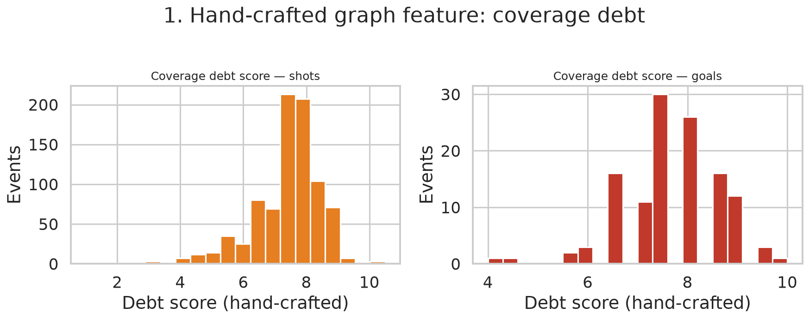
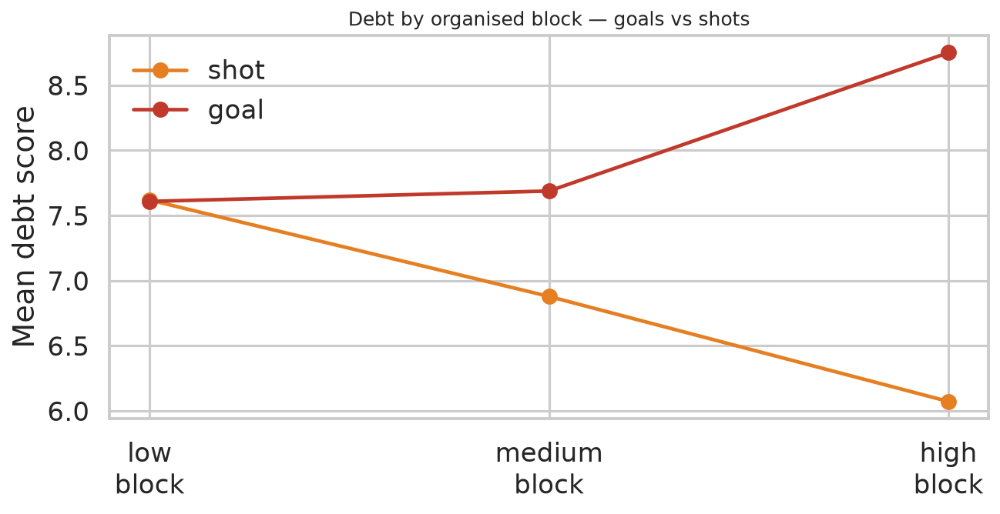
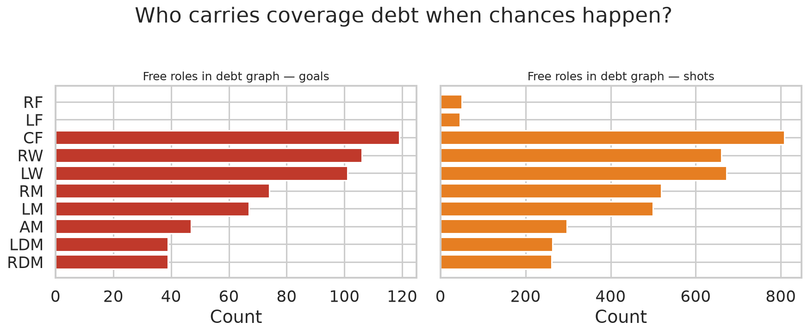

debt_score = free attackers + bonus for free CF / wide free
+ far-side runner + ball inside shape + pressing chain that did not regain.
Tunable weights, not fitted weights. Charts below are descriptive of shots/goals.



n_free, cf_free, wide_free, free_rolesn_chain_presses, chain_end, far_runner, inside_shapen_nodes, n_edges, edge_densityevent_debt from press/far/inside only — no Hungarian